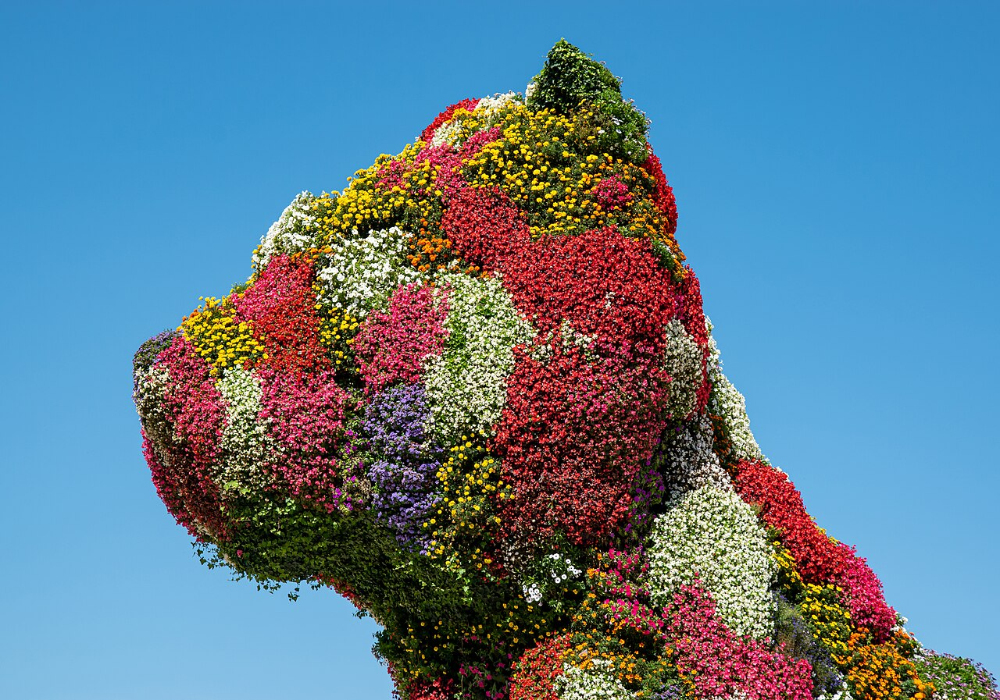
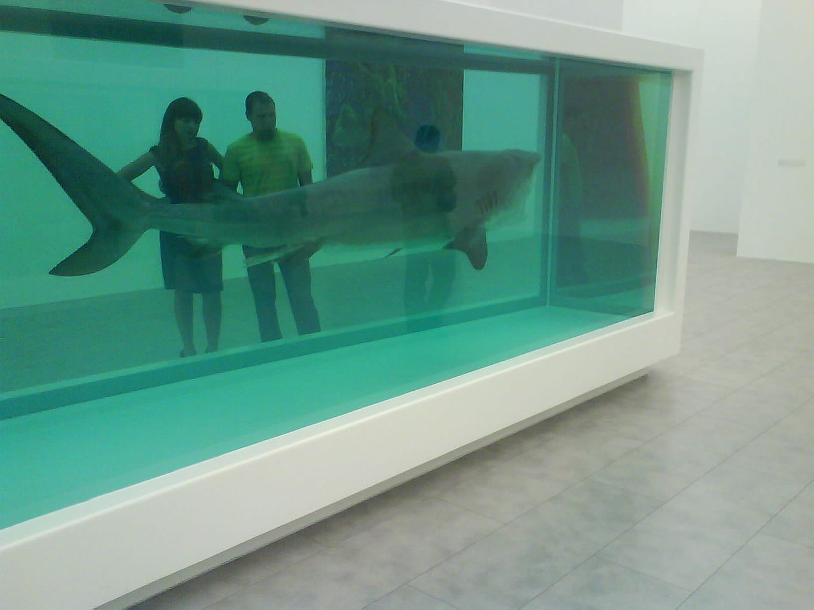
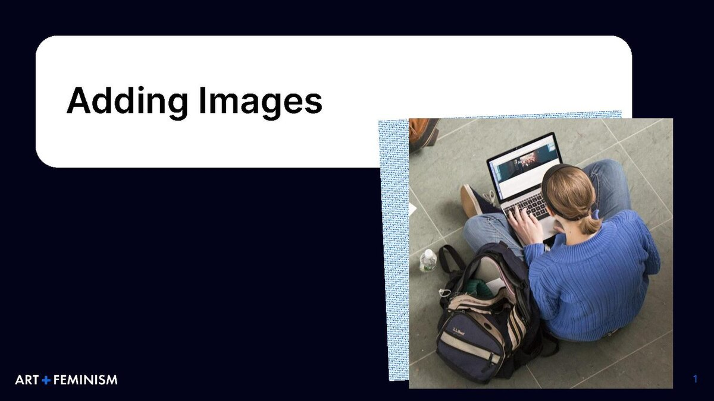
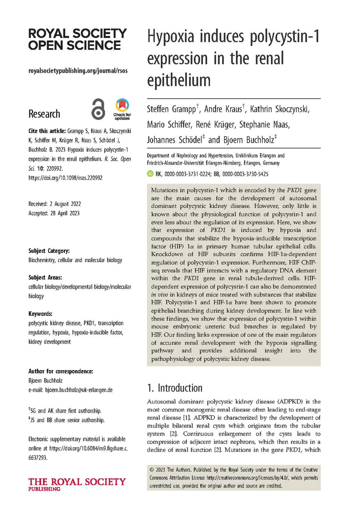
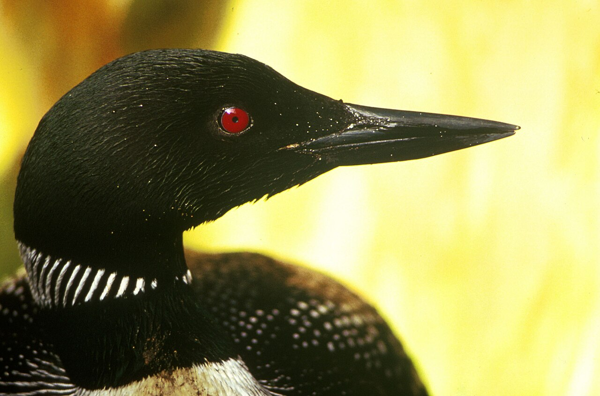
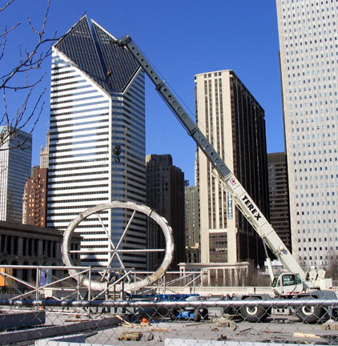
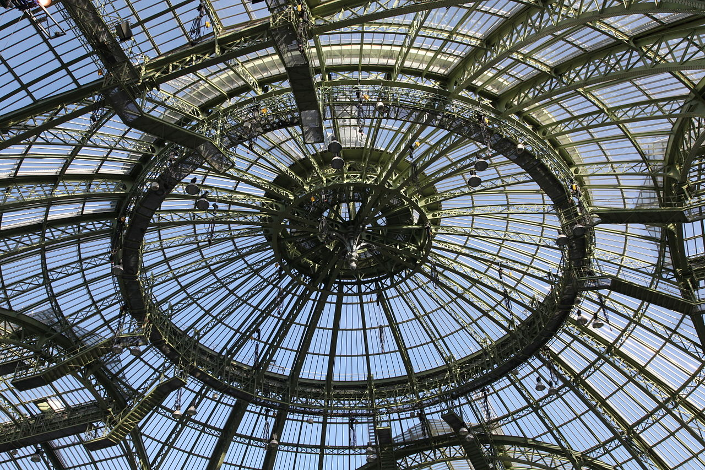

Meesterwerk: Puppy
Jeff Koons, 1992

⚜️ UITGEBREIDE STIJLFIGUREN
🌀 PASTICHE
Alles is remix: Postmodernisme citeert, kopieert, remixt. Geen originaliteit, alleen recyclage. Stijlen uit het verleden worden hergebruikt.
De dood van de auteur: Barthes - de maker telt niet meer. De kijker maakt de betekenis.
🌀 SIMULACRUM
De kopie is realer: Baudrillard - we leven in een wereld van simulaties. Het origineel bestaat niet meer, alleen de kopie.
Hyperrealiteit: Disneyland is "echter" dan de echte wereld. Kunst wordt ervaring, entertainment.
🌀 DEATH OF THE AVANT-GARDE
Alles is al gedaan: Geen nieuwe stromingen meer, alleen herinterpretatie. Het einde van de kunstgeschiedenis (Danto).
Pluralisme: Alles mag naast elkaar bestaan. Abstract naast figuratief, high naast low.
🌀 COMMODITY FETISHISM
Kunst als investering: De markt bepaalt de waarde. Hirst, Koons - kunstenaars als merken.
Blockbuster tentoonstellingen: Kunst als entertainment, als toerisme. Het museum wordt winkel.
📚 TIJDSGEEST CONTEXT (1970-2000)
🌍 POLITIEK PERSPECTIEF
- Het einde van de Koude Oorlog (1989), de val van de Berlijnse Muur
- Fukuyama's "The End of History" - het liberalisme heeft gewonnen
- Maar ook: fragmentatie, multiculturalisme, identiteitspolitiek
- Grote verhalen verdwijnen, kleine verhalen nemen hun plaats
📖 LITERAIR PERSPECTIEF
- Postmoderne literatuur: Pynchon, DeLillo, Wallace
- Intertextualiteit, metafictie, het einde van de grand narrative
- Theorie wordt belangrijker dan praktijk: Derrida, Foucault, Baudrillard
- Deconstructie van alles - taal, macht, identiteit
🧠 PSYCHOLOGISCH PERSPECTIEF
- Het gefragmenteerde zelf
- Social media creëert identiteit als performance
- Lacan's "spiegelstadium" - we zijn wat we zien in de ander
- Depressie en angst in het "wereldwijde dorp" (McLuhan)
- De mens als constructie, niet als essentie
⚙️ HISTORISCH PERSPECTIEF
- Digitalisering: de computer, het internet (1990s), de digitale revolutie
- Globalisering: de wereld wordt dorp, maar ook onpersoonlijk
- Neoliberalisme: alles is markt, alles is koopbaar
- De "Yuppies" van de jaren 80, de "dotcom" bubbel van de jaren 90
🎭 FILOSOFISCH PERSPECTIEF
- Poststructuralisme: geen vaste betekenis, geen vaste waarheid
- Lyotard's "La Condition Postmoderne" (1979): het einde van de metarecits
- Relativisme: alles is waar, niets is waar
- De filosoof als scepticus, niet als wijze
🎨 MEESTERWERKEN - GEDETAILLEERDE ANALYSE
1. "Puppy" (1992) — Jeff Koons
Verschillende locaties · 12 × 12 meter · Staal, aarde, bloemen
Achtergrond: Een reusachtig puppy van bloemen, geïnspireerd op 18e-eeuwse tuinkunst. Koons' meest bekende werk - kitsch als hoogkunst, de lol verheven tot ernst.
🔍 STIJLANALYSE
Schaal: 12 meter hoog! Het is een kathedraal van schattigheid. De kitsch wordt monumentaal, overweldigend.
Bloemen: Echte levende bloemen die worden vervangen. Het werk groeit, verandert, sterft. Het is tijdelijk, seizoensgebonden.
Puppy: Het ultieme schattige object. Maar groot genoeg om angst op te roepen. Het is lief en monsterlijk tegelijk.
Historische referentie: Koons citeert barokke tuinarchitectuur. Het is een remix van high (barok) en low (puppys).
2. "The Physical Impossibility of Death in the Mind of Someone Living" (1991) — Damien Hirst
Privécollectie (Steven Cohen) · 213 × 518 × 213 cm · Tijgerhaai in formaldehyde

Achtergrond: Een dode haai in een vitrine van formaldehyde. Het meest iconische werk van de Young British Artists. De dood als entertainment, als luxeproduct.
🔍 STIJLANALYSE
Dood: De haai is gevaarlijk, angstaanjagend - maar dood, opgebaard. De dreiging is verleden tijd. Het is memento mori voor de moderne tijd.
Vitrine: De vitrine is belangrijker dan de haai. Het is een museumstuk, een wetenschappelijk specimen. Kunst als taxidermie.
Titel: De lange, filosofische titel is bijna lachwekkend. Het is pretentieus en terecht. Het is "over" de dood, maar laat ons er niet aan denken.
Markt: Verkocht voor miljoenen. De dood als investering. Hirst maakt de commerciële kant van kunst expliciet.
3. "Untitled Film Still #21" (1978) — Cindy Sherman
MoMA, New York · 20 × 24 cm · Zwart-wit foto

Achtergrond: Sherman fotografeert zichzelf als filmkarakters. Deze serie (69 foto's) imiteert Hollywood-stills van de jaren 50-60. Maar het zijn geen echte films.
🔍 STIJLANALYSE
Persona: Sherman is actrice, regisseur, fotograaf. Ze speelt stereotypen: de huisvrouw, de femme fatale, de naïeve tiener. Identiteit als performance.
Film noir: De zwart-wit stijl, de hoekige compositie, de verwarde blik. Het citeert zonder te kopieëren. Het is "als" een film, maar het is er geen.
Vrouwbeeld: De vrouw als object van de mannelijke blik (Mulvey). Sherman ondermijnt dit door zelf de blik te controleren. Het is zowel imitatie als kritiek.
Untitled: Geen titel, geen verhaal. De kijker moet het zelf invullen. Het is een open einde, een fragment.
4. "Untitled (Your body is a battleground)" (1989) — Barbara Kruger
Verschillende versies · 284 × 284 cm · Zeefdruk op vinyl

Achtergrond: Gemaakt voor de Women's March in Washington. Kruger's kenmerkende stijl: zwart-wit foto met rode letters. Feministische politiek als visuele punch.
🔍 STIJLANALYSE
Tekst: "Your body is a battleground." Direct, agressief, persoonlijk. Het is een slogan, een protestbord, maar ook poëzie.
Beeld: Een vrouwengezicht, opgedeeld in positief/negatief. Het lichaam als politiek terrein - abortus, reproductieve rechten, identiteit.
Stijl: De Futura Bold Italic font, het rood-wit-zwart. Kruger's handelsmerk. Het citeert reclame, propaganda, maar ondermijnt die ook.
Activisme: Dit is kunst als directe actie. Het hing op straat, niet alleen in musea. Het is populair en politiek tegelijk.
5. "Untitled (Skull)" (1981) — Jean-Michel Basquiat
Privécollectie · 206 × 176 cm · Acryl en olieverf op doek

Achtergrond: Basquiat's doorbraak - van graffitikunstenaar (SAMO) tot galerie-artiest. Het schedelthema keert steeds terug: dood, racisme, de straat.
🔍 STIJLANALYSE
Primitivisme: Basquiat citeert Afrikaanse kunst, kindertekeningen, anatomische platen. Het is raw, ongepolijst, expressief.
Tekst: Woorden, cijfers, teksten door het beeld heen. "TEETH", "NEGRO", "MAN". Het is visueel lawaai, informatie-overload als straatbeeld.
Kleur: Felle kleuren tegen grauwe achtergrond. Het is urgent, chaotisch, emotioneel. Dit is geen cool Postmodernisme - het is heet, direct.
Identiteit: Basquiat was zwart, was straat, was zelfdestructief. Het werk is autobiografisch - de schedel is zijn eigen.
6. "Apocalypse" (1988) — Christopher Wool
Privécollectie · 264 × 183 cm · Emaille op aluminium
[Afbeelding momenteel niet beschikbaar - alternatief wordt gezocht]
Achtergrond: Wool's tekst-schilderijen gebruiken woorden als patroon, als beeld. Het is abstract en literair tegelijk. De betekenis verdwijnt in de vorm.
🔍 STIJLANALYSE
Tekst als beeld: "APOCALYPSE" - maar de letters zijn stencil, mechanisch. Het woord wordt patroon, textuur. Je leest het, maar ziet het ook.
Emaille: De techniek is industrieel, niet artistiek. Het is als verkeersborden, als graffiti. Hard, glanzend, stedelijk.
Herhaling: Wool herhaalt woorden, laat ze overlappen. "TERRORIST" wordt "ERROR IS". Taal is instabiel, betekenis verschuift.
Minimalisme: Het is bijna een monochrome schilderij, maar dan met tekst. De abstractie en de literatuur botsen, versmelten.
7. "Abstract Painting" (1992) — Gerhard Richter
Privécollectie · 200 × 200 cm · Olieverf op doek
[Afbeelding momenteel niet beschikbaar - alternatief wordt gezocht]
Achtergrond: Richter's abstracte werken worden gemaakt door te schilderen, wissen, herschilderen. Het proces is belangrijker dan het resultaat.
🔍 STIJLANALYSE
Proces: Richter gebruikt een rakel om verf weg te halen, dan weer toe te voegen. De lagen zijn geschiedenis - je ziet de tijd.
Toeval: Het eindresultaat is niet gepland. Richter reageert op wat er gebeurt. Het is Abstract Expressionisme met afstand, met intellect.
Fotografie: Richter's abstracties lijken vaag, uit focus. Ze imiteren bewogen foto's. Het schilderen imiteert de fotografie die de schilderkunst heeft vervangen.
Schoonheid: Ondanks het intellectuele proces zijn ze mooi, sierlijk. Richter weigert te kiezen tussen intelligentie en esthetiek.
8. "Cloud Gate" (2004) — Anish Kapoor
Millennium Park, Chicago · 10 × 20 × 13 meter · Roestvrij staal

Achtergrond: De beroemde "Bean" van Chicago. Een reflecterende, bonenvormige sculptuur die de skyline en de bezoekers vervormt. Publieke kunst als ervaring.
🔍 STIJLANALYSE
Reflectie: De stad, de lucht, de mensen - alles wordt weerspiegeld maar vervormd. Je ziet jezelf, maar niet zoals je bent.
Vorm: Geen begin, geen einde - de curve is oneindig. Het is organisch maar machine-gemaakt, natuurlijk maar industrieel.
Publiek: Dit is kunst voor iedereen - selfies, aanraking, spel. Het is populair, toegankelijk, maar ook filosofisch ( wie ben ik in deze reflectie?).
Schaal: 110 ton staal! Het is een monument, maar een leeg monument. Het reflecteert alles, betekent zelf niets.
9. "Personnes" (2010) — Christian Boltanski
Grand Palais, Parijs · Installatie · Kleding, licht, metalen bakken

Achtergrond: Duizenden stapels oude kleren, opgesteld als een massagraf. Geen lichamen, alleen de sporen van levens. Een monument voor de anonieme doden.
🔍 STIJLANALYSE
Absentie: De kleren dragen de vorm van de mens, maar de mens is weg. Het is een herinnering aan wat niet meer is.
Massa: Duizenden stapels - je kunt ze niet allemaal zien. Het overweldigt. Holocaust, oorlog, migratie - de tragedie van de massa.
Licht: Hanglampen als in een gevangenis, een fabriek, een mortuarium. Het is klinisch, bureaucratisch, onpersoonlijk.
Herinnering: Boltanski maakt werk over herinnering, verlies, de Shoah. Het is persoonlijk (zijn familie) en universeel (alle verdwenen levens).
10. "DOB" (1996) — Takashi Murakami
Verschillende versies · 100 × 100 cm · Acryl op doek
[Afbeelding momenteel niet beschikbaar - alternatief wordt gezocht]
Achtergrond: Murakami's alter ego - DOB, een karakter dat overal in zijn werk terugkomt. Het is Superflat: de vervlakking van high en low, oost en west.
🔍 STIJLANALYSE
Superflat: Geen diepte, geen perspectief. Alles ligt op één vlak, zoals in manga en anime. Het is de esthetiek van het scherm.
DOB: De naam staat voor "dobojite" (waarom?). Het is een karakter zonder karakter, een leeg icoon. Het is Murakami zelf, maar ook iedereen.
Oost-West: Het lijkt op Mickey Mouse, op Hello Kitty, op traditionele Japanse schilderkunst. Het is alles tegelijk, een remix van globalisering.
Merchandise: DOB verschijnt op tassen, schoenen, schilderijen. Er is geen verschil tussen kunst en product. Murakami omarmt dit volledig.
📚 CONCLUSIE: ALLES IS AL GEZEGD
Postmodernisme leert ons:
- Dat originaliteit een mythe is: Alles is remix, alles is citaat
- Dat de kopie realer is: Simulacra zijn onze werkelijkheid
- Dat kunst een markt is: Hirst en Koons als merken
- Dat identiteit performance is: Sherman, sociale media
- Dat de grenzen vervagen: High/low, oost/west, origineel/kopie
Postmodernisme is misschien wel het einde van de kunstgeschiedenis. Of het begin van iets nieuws.